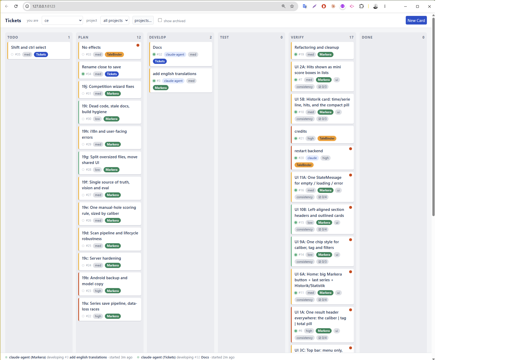
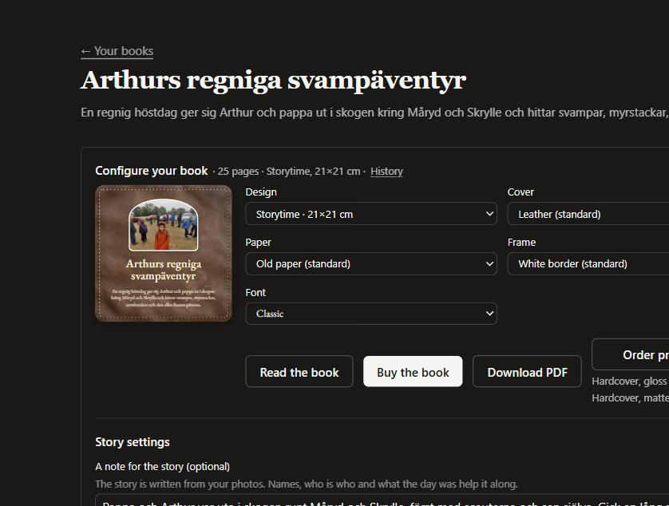
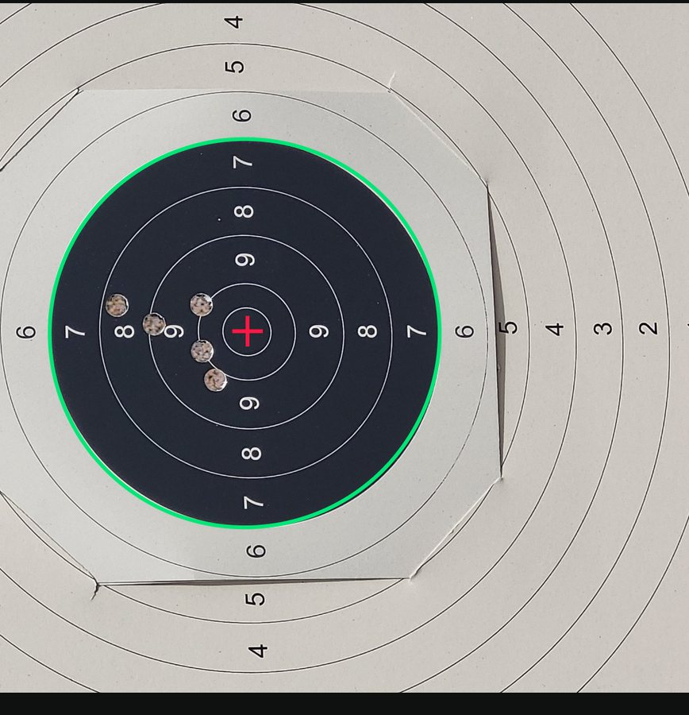
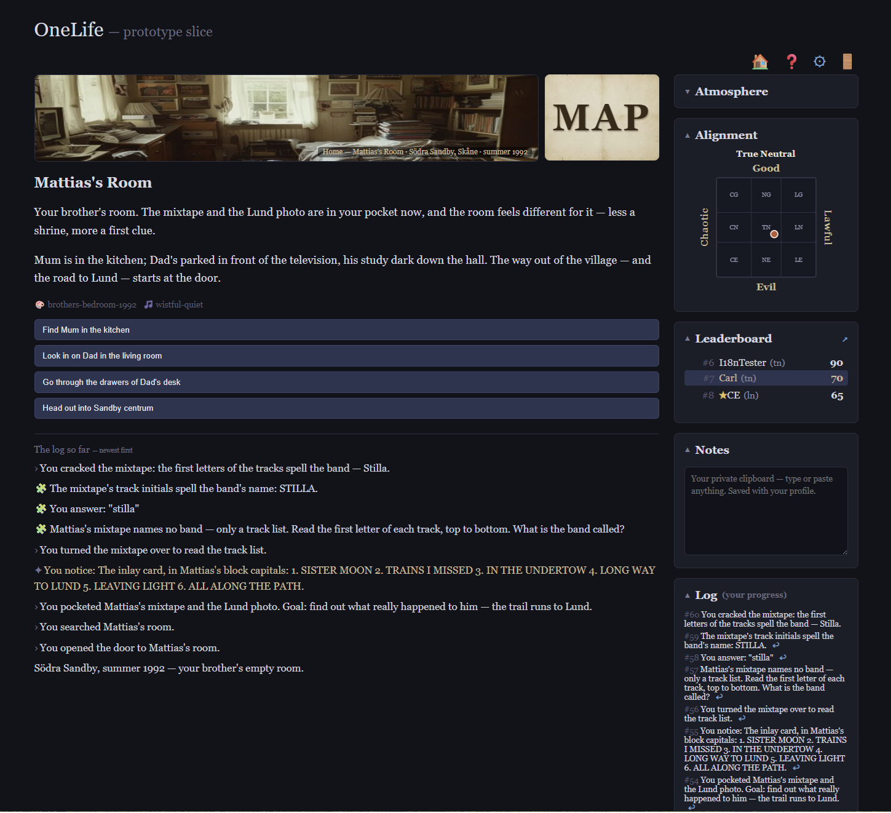
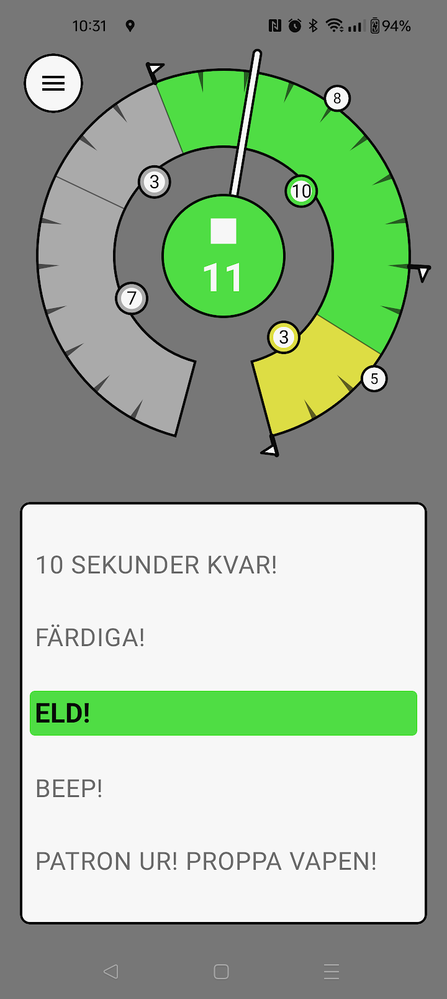
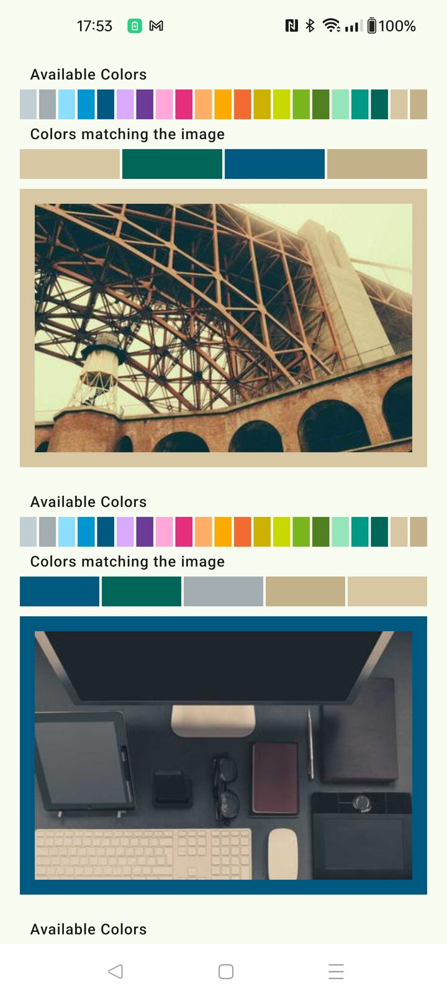

I am a senior developer with more than 20 years of professional experience building software across mobile, backend, and cloud platforms. My core strength is Android and Kotlin development, but I work comfortably across the full stack and pick up new languages, tools, and ecosystems quickly — most recently at Inter IKEA, where we used a .NET backend to build a server-driven UI that powers both the Android and iOS apps from the same JSON layouts.
I have made AI a central part of how I work, relying on Claude Code daily to write, review, and refactor code faster and to prototype ideas with much shorter turnaround. I also apply AI beyond day-to-day coding: in a personal project, Markera, I'm building a Kotlin Multiplatform app that automatically scores precision-shooting series from a single photo of the target — running an on-device YOLOv8 ONNX model to detect shot holes, reading the printed ring digits with ML Kit, and locating the target centre geometrically to compute the score.
I am well-versed in development methodologies such as Agile, Scrum, Kanban, and test-driven development, and I have a good understanding of how to balance technical and business requirements, backed by substantial international and cross-cultural experience. Over the years I have taken on a range of roles, including senior Android developer, scrum master, technical project owner, and Android Competence Lead at Jayway.
Projects

Tickets
A personal Jira replacement: a lane board I drag cards around on while Claude Code agents work the same cards over MCP.
Read more
TaleBindery
Turns a story idea and photos of the real people in it into an illustrated picture book.
Read more
Markera
Scores a precision-shooting series from one phone photo of the target — on-device YOLOv8, OCR and geometry.
Read more
OneLife
A text adventure where you talk your way past AI-driven characters. Death is real.
Read moreKickTro
A beat-reactive WebGL2 demoscene engine with 55 effects, stackable four layers deep.
Read more
FieldShootingTimer
A shot timer that calls out Swedish field-shooting range commands. One codebase, Android and iOS.
Read moreappshooter
Companion app for webshooter.se: browse competitions, sign up, follow results and score trends.
Read more
ColorMatch
Frames each photo with the palette color that best matches its most prominent hues.
Read moreLSystemCamera
Redraws the live viewfinder as one space-filling L-system curve, thick where the image is dark.
Read moreLMSLHT-web-js-client
The browser version: a photo redrawn as a single-line L-system halftone.
Read moreExperience
On the team behind IKEA's ROSS Shoppable App, I build the consumer app in Kotlin and Jetpack Compose using IKEA's Skapa design system, on a server-driven UI architecture that renders the interface dynamically from JSON layouts so we can ship features without app releases. I've developed reusable Compose components, debugged complex authentication (Auth0/CIAM) and analytics (Episod) flows, integrated with our .NET backend, and contributed to CI/CD through Azure Pipelines — working test-driven and taking ownership from design to production.
Kotlin, Jetpack Compose, .NET, Azure Pipelines, BigQuery, Looker Studio, Git, Jira, Android, Claude Code, GitHub CopilotGetting to know my daughter full time!
Worked on two major projects. As senior developer on Japan Airlines' new In-Flight Entertainment system, I delivered development tasks, mentored junior colleagues, and proposed product and process improvements as the team grew from 6 to ~20 members by the v1.0 release. Earlier, I developed the corporate Android app for Swedbank's business customers, collaborating with multidisciplinary teams (4–12 members) to launch a high-quality solution that significantly improved the user experience.
Kotlin, Git, Jenkins, Jira, Android, Gerrit, Bitbucket, ChatGPTStarted a consulting company, both to work through and to employ other developers, together with Masar and Yousuf. We are building an app for parents to keep track of their kids' money and weekly allowance. With our time being limited, this is a long-running project, mostly used to make sure we keep up to date with the tech stack.
Kotlin, Compose, Coroutines, Flow, GitHub, ChatGPTConsulting at Sony on a backend migration of locally running code to AWS. Part of a team of around 10 developers picking tasks from our ticket system. Covering for a colleague on parental leave, I picked tasks I could complete without needing too much help, to avoid putting strain on the team.
Spring Boot, AWS, Ansible, Bash, Regex, Python, Yaml, CI, TDD, GerritØredev is a multi-track conference attracting 1300+ participants and 100+ speakers to a beautiful old industrial location in central Malmö. As part of the Speakers Committee, our role was to find and invite speakers and to review the submitted talks.
Consulting, mostly on Android-related assignments, as competence lead for the Android team and part-time fun fixer — organiser of events such as pistol shooting, chilli-sauce tasting evenings, and regular dinners and lunches for the team.
Java, Kotlin, Git, Jenkins, Jira, GitHub, Android StudioWorked as an Android developer and Technical Project Owner for three years with clients such as O2, Vodafone, and Heathrow.
Java, Maven, Git, Jira, Scrum, CI, CD, TDDPart of the team that developed a front-end for the PacketLogic product produced by Procera, split between being scrum master and Java/Python developer. Also did a short evaluation project (testing video decoder performance) for Axis, and set up the syslog and MSSQL database for the ST Ericsson tools team.
Java, Python, Scrum, CI, CD, TDD, Nano, Make, Deb, MsSql, SyslogBuilt J2ME mobile-TV apps and a framework for creating J2ME apps quickly using XML layouts and a simple scripting language for interactions, together with two colleagues. Wrote a test tool in Perl for automating a FOTA test suite.
Education, Languages & Skills
Lund University — Master of Computer Science (1998–2003)
Swedish (Native) · English (Professional) · Russian (Beginner)
Claude Code · Android · Kotlin · Agile · Teambuilding